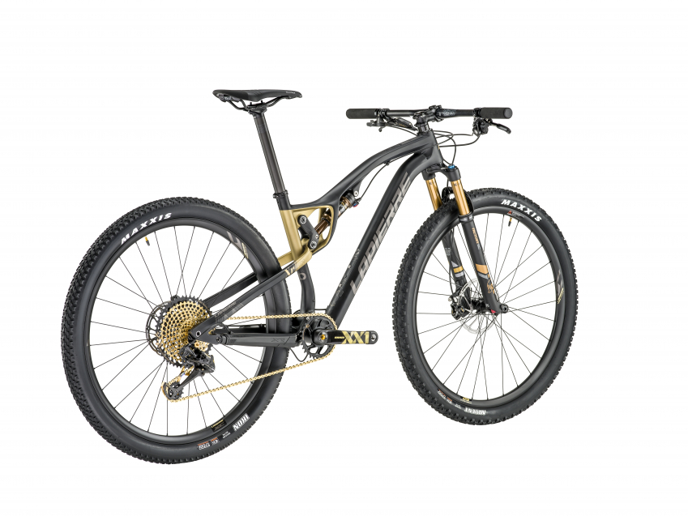

Rowery górskie (MTB):
Przeznaczone do trudnego, nieutwardzonego terenu, lasów i gór. Charakteryzują się szerokimi oponami, solidną ramą i amortyzacją. Podkategorie to m.in. XC (cross-country), Enduro (zjazdy) i All Mountain.
 Powrót do strony głównej